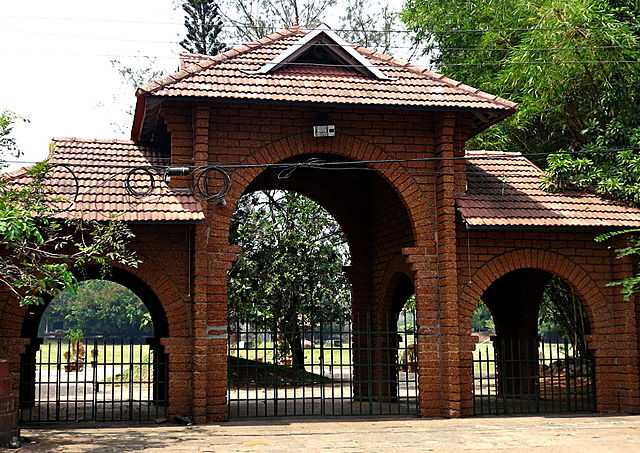

You won’t be wrong if you call this metropolis as the ‘City of Spices’, ‘City of Truth’ or the ‘City of Sculptures’. Well, all these synonyms are hardly enough to describe the aura and essence of Kozhikode or Calicut! This kaleidoscopic city is much more than a tourist destination.
Located on the Malabar Coast, Kozhikode or Calicut is esteemed as one of the diverse and best places to visit in Kerala. Dotted with an array of historical landmarks, tourist spots and attractions, this wonderful city is also a lively reminiscent of the Dutch and British eras in India.
Popular Spots to Visit

Thusaharagiri Waterfalls
Lying in the Western Ghats of Kozhikode district in Kerala, Thusharagiri Fall cascades down as three waterfalls. Located in a small tribal village, the name of the falls means snow covered mountains
Know More
Thikoti Light House
Said to be built on the remains of a shipwreck, the Thikkoti Lighthouse is one of the major attractions of Kozhikode. Located on a rocky shoreline, the place is best known for the scenic views it offers as well as several species of nomadic birds
Know More

Mananchira Square
Fed by a natural shower, Mananchira is a man-made freshwater pond surrounding which is the astounded complex, Mananchira Square. The pond was built in around 14th century as a bathing pool by the feudal ruler of Kozhikode, Zamorin Mana Vikrama whereas the Mananchira Square was opened in 1994. Previously, the Square was known as Manachira Maidan and was famous for football. It was a host of many matches as well.
Know More